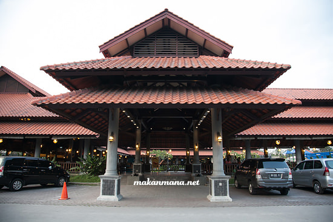
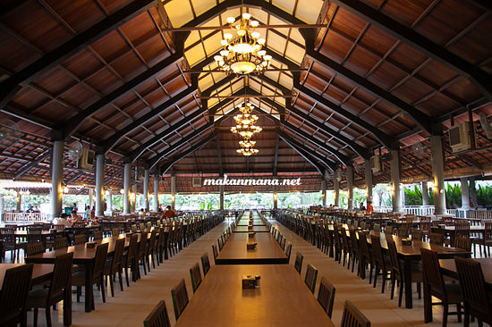
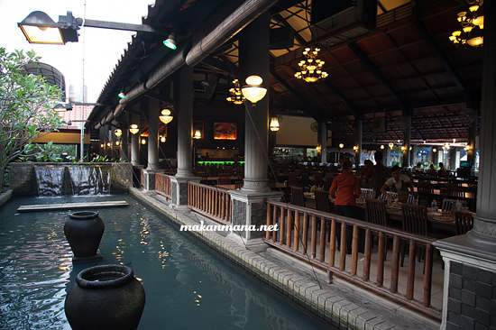
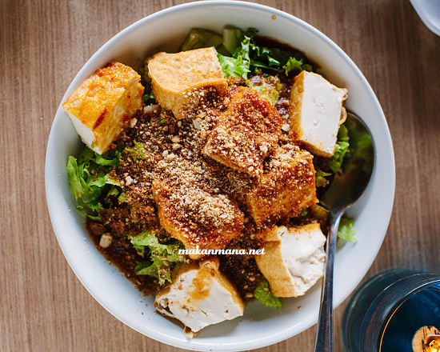
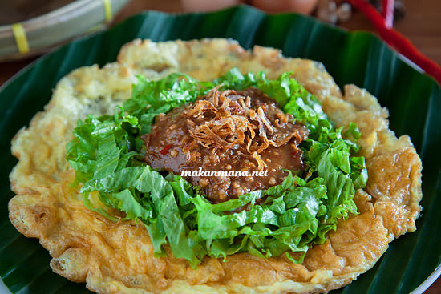
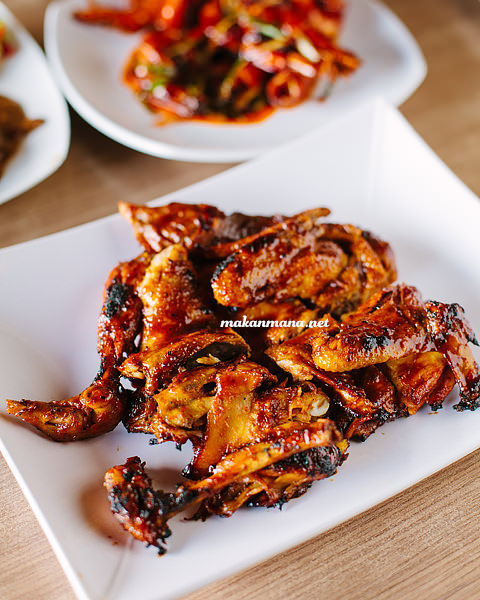
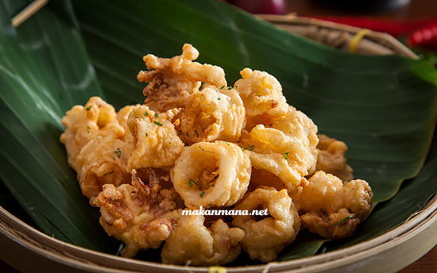
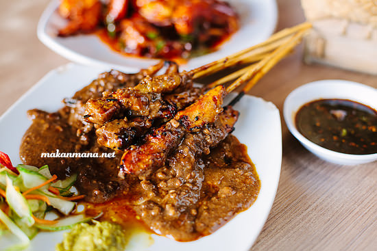
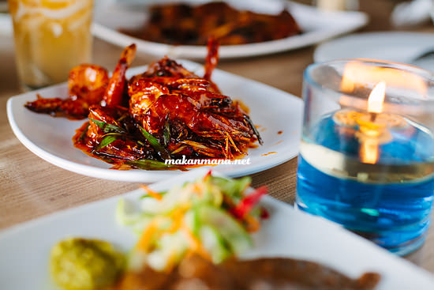
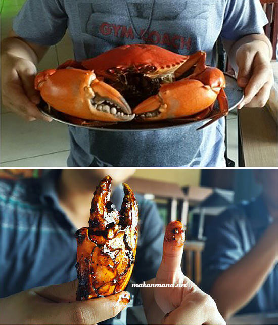

Bagi sebagian besar masyarakat Medan, rumah makan ini ga butuh introduction lagi. Alkisah, rumah makan ini berawal dari sebuah warung kecil yang menjual makanan khas Sunda, terutama signature dishnya Ayam goreng Kalasan. Dari kesederhanaan resep ini, rumah makan yang kecil dulunya pindah ke lokasi yang berdekatan dengan airport, mencakup areal yang cukup luas dan dikelilingi kolam serta sebuah ‘kapal’ yang berhenti di dermaga buatan. We still remember back then, hal yang paling kami kenang masa itu ialah memberi makan ikan yang berada di kolam, how nostalgic!

Tahun 2007, kesederhanaan itu mulai pudar. Resto yang semakin sukses ini pun akhirnya pindah ke lokasi baru. Lembur Kuring yang sekarang menempati Jalan Amir Hamzah di seberang Griya Dome ini lebih modern dengan arsitektur tradisional Indonesia.

Terdapat 2 section di resto ini, open air dan satu lagi didalam ruangan yang ber-AC yang biasa digunakan untuk acara prasmanan. Gone are the conceptual resto seperti zaman kecil kita dahulu, tetapi beberapa elemen masi tetap dipreservasi, seperti kolam ikan dengan makhluk-makhluk yang unik, serta areal bermain anak-anak.

Dari seluruh menu yang kami coba, beberapa ini yang menjadi favorit

Tahu Goreng, keliatan seperti gado-gado. Sebenarnya dari bumbu sama, hanya saja penggunaan bahan yang berbeda. Makanan khas orang Indonesia banget.

Hampir setiap meja memesan menu ini… Tahu Telor (29.5rb). Cocok dijadikan santapan pendamping nasi. Bumbu kacang diatas yang kental diaduk dengan telur dadar yang dalamnya berisi tahuJepang. The result is combination of sweet and salty flavor with crunchy texture dari daun selada.

Ayam panggang (56rb/ekor), alternatif dari ayam goreng karena beberapa hari sebelumnya kami udah makan ayam goreng, jadi kali ini makan ayam bakarnya aja. Ayam yang dipilih di resto ini bukan ayam kampung, tetapi hybrid dari ayam eropa dengan kampung dan menjadi ‘standar’ di pasar tradisional dengan ‘ayam jenis kalasan’. We love the sauce, dan karena ukuran ayamnya ga besar dan marinasi yang cukup lama, bumbunya meresap hingga ke daging.

Cumi goreng tepung (29.5rb), buat finger foods sambil nunggu pesanan lain datang.

Sate ayam (38rb), salah satu dari sekian sate bakar bumbu kacang yang tersedia di menu, selain ayam bakar juga terdapat sate kambing dan sate cumi.

Udang goreng mentega (58rb) since we had enough of anything ‘bakar’. Udang digoreng terlebih dahulu lalu ditumis dengan kecap, mentega dan beberapa rempah in house. Savory!
And…the finale! Kepiting jantan masak saos pedas ala Lembur Kuring (26rb/ons). Kalau ditanya apakah ini sama dengan saos padang…well..quite similar, tetapi menurut penuturan pengelola sih katanya campuran antara chilli crab Singapore dengan saos padang. It’sssss soooo delicious!

Tapi yang namanya kepiting jumbo kan ga murah juga toh…Kalo ga salah harganya mulai dari Rp 32.000/ons (Jantan) dan Rp 36.000/ons (Betina). Tapi…nilai plus yang dikasi resto ini ialah money back guarantee, no question asked kalau daging kepitingnya tidak padat, jadi sebagai konsumen juga ga merasa beli kucing dalam karung. Gotta admit this kind of service is exceptional!
Beberapa jus yang direcommended disini, diantaranya es limau (12rb), jus timun parut (12rb), es kelapa jeruk (13rb). Refreshing!
Overall dining experience disini memuaskan. Tempatnya juga bersih dan rapi, beserta servis yang lumayan cepat.
Restoran Lembur Kuring
Reservation: 061 – 8465515 / 8459049
Telepon: 061-414 1197
Operational hour: 11.00 – 22.00 (Last order 21.30)